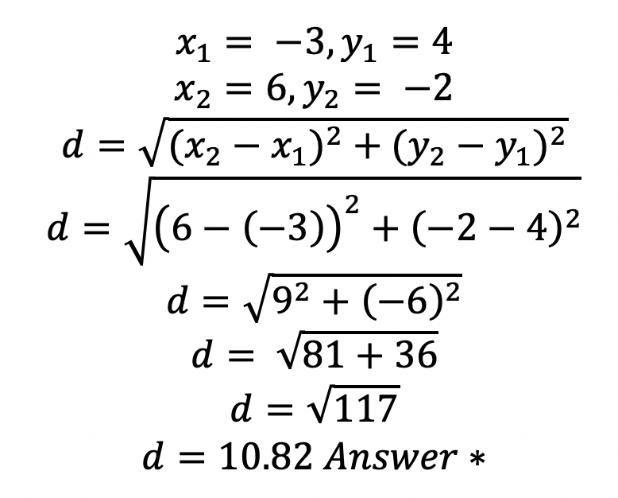
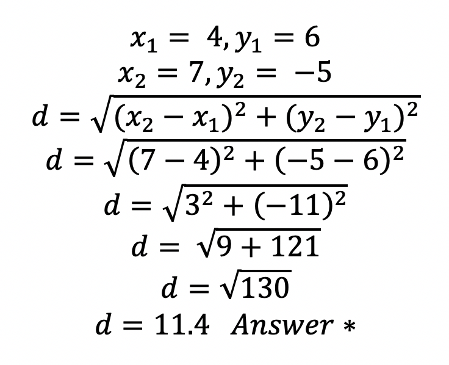
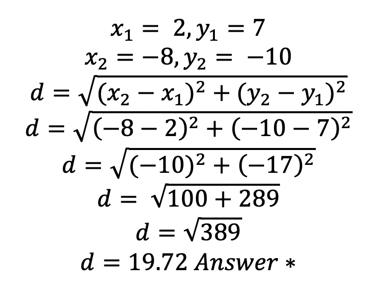
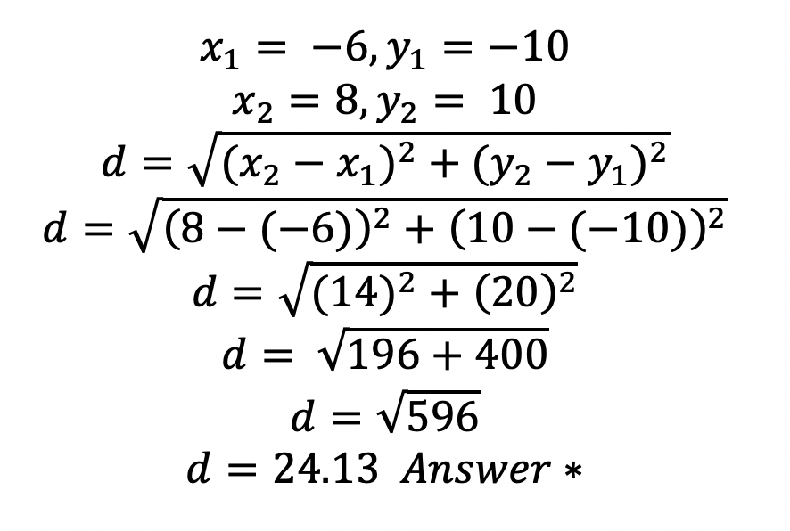

When you have two points on the coordinate plane, you can find the distance between them using the Distance Formula.
The first point has coordinates of (x1, y1) and the second point has coordinates (x2, y2).
The Distance Formula has multiple operations within it, therefore you must use PEMDAS to work your way to the correct answer.
The steps for PEMDAS are to do subtraction inside each set of parentheses first, then square each result. Then add both terms together, then take the square root. This will get you the correct answer.
The nice part about the Distance Formula is that you do not need to plot the ordered pairs on a coordinate axis and then use Pythagorean Theorem to get the length between them. We can do it from the ordered pairs without graphing them. And the best part is it saves us so much time!
Example 1: Calculate the distance between (-3, 4) and (6, -2).

Example 2: Calculate the distance between (4, 6) and (7, -5).

Example 3: Calculate the distance between (2, 7) and (-8, -10).

Example 4: Calculate the distance between (-6, -10) and (8, 10).

The most important thing to remember when using the Distance
Formula is when you are substituting a negative coordinate into the formula, make sure you are careful to keep the subtract sign from the formula in front of the negative ordered pair. Then the minus a negative number will turn to addition.
Let's try one on your own. Then check your answer.
Calculate the distance between (-4, -10) and (2, 8).
Try one on your own. Then check your answer.
Calculate the distance between (5, 8) and (-3, 4).
Try one on your own.
Then check your answer.
Calculate the distance between (-3, -9) and (5, -6).